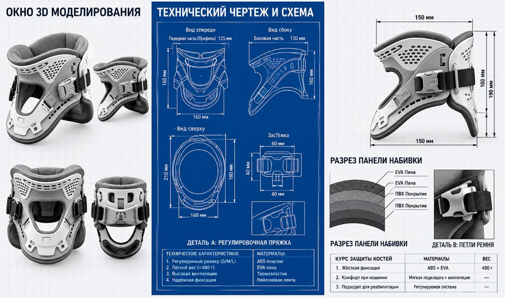
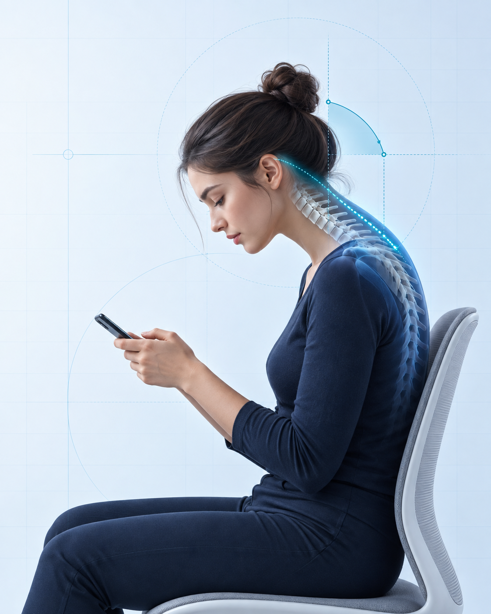
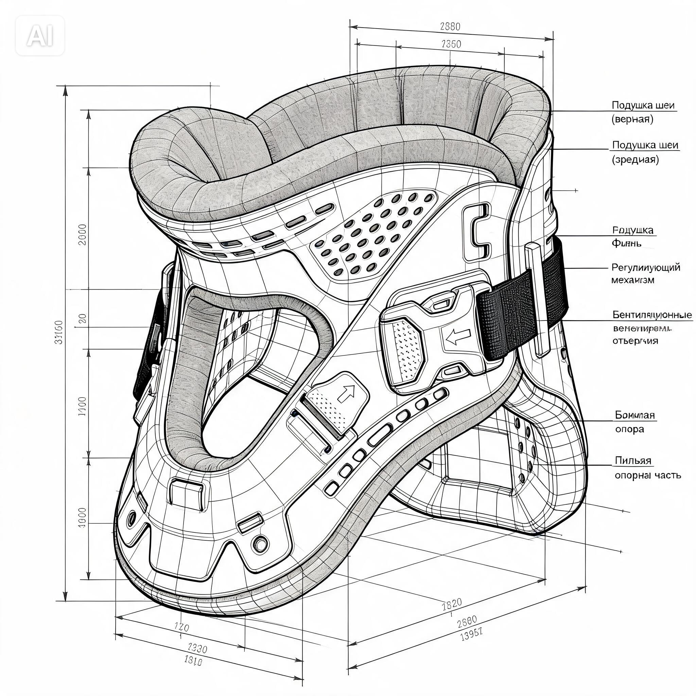

01
Мягкое ограничение
Конструкция даёт тактильную подсказку, когда наклон становится чрезмерным, и бережно возвращает шею в норму.
Держи голову выше —
работай без боли в шее и сутулости
Лёгкое эргономичное устройство для контроля положения головы без сложной электроники. Мягко отслеживает критический угол наклона при синдроме «tech neck» и физически помогает вернуть шею в анатомически правильное положение.

01 / ПРОБЛЕМА И СРАВНЕНИЕ
При долгой работе со смартфоном или ноутбуком голова незаметно наклоняется вперёд — нагрузка на шейный отдел позвоночника возрастает в 4–5 раз.

При долгой работе с гаджетами голова незаметно наклоняется вперёд.
Дольше держать позу становится сложнее, появляется хроническая тяжесть в воротниковой зоне.
Мышцы шеи и плеч работают интенсивнее, компенсируя вес наклонённой головы (до 18–22 кг при 35–45°).
Фокус на задаче уступает желанию сменить позу, снижается продуктивность и концентрация.
Пользователь увлекается экраном и не замечает, как голова опускается всё ниже. Шейные позвонки испытывают избыточную компрессию.
При попытке наклонить голову глубже 15° подушка мягко сигнализирует упором и физически помогает вернуть шею в анатомически правильный ракурс.
02 / НАШЕ РЕШЕНИЕ
ErgoNeck мягко ограничивает чрезмерный наклон головы и помогает сохранять более комфортное положение.
Конструкция даёт тактильную подсказку, когда наклон становится чрезмерным, и бережно возвращает шею в норму.
Наденьте и настройте устройство менее чем за 30 секунд под индивидуальную анатомию шеи.
Механический принцип — никаких сложных датчиков, фоновых приложений и ежедневной зарядки.
Протестируйте работу ErgoNeck прямо сейчас: меняйте угол наклона головы ползунком и включите режим активной поддержки ErgoNeck.
03 / ПРЕИМУЩЕСТВА
Работает всегда. Не требует зарядки, синхронизации по Bluetooth или сложного обслуживания.
Простая конструкция и доступные материалы удерживают цену прототипа в пределах студенческого и семейного бюджета.
Лёгкие гипоаллергенные материалы в зонах контакта с кожей не вызывают раздражения при долгой работе.
Ремни и высота опоры настраиваются индивидуально под любого пользователя.
Минимум деталей, понятная сборка и быстрый старт без инструкций.
04 / КАК ЭТО РАБОТАЕТ
От надевания до автоматического контроля угла наклона головы — без приложений и сложных калибровок.
Расположи мягкую эргономичную опору вокруг шеи. Конструкция сразу задаёт базовую точку отсчёта угла наклона головы.
Настрой ремни и высоту опоры. При начале сутулости (наклон свыше 15°) система моментально определяет отклонение.
Мягкая физическая опора сигнализирует о наклоне и помогает вернуть шею в анатомически правильное положение.
05 / ДЛЯ КОГО
Учёба, чтение и онлайн-задания с правильной осанкой с ранних лет
Конспекты, лекции и подготовка к сессии без перегрузки шеи
Задачи на ноутбуке, телефоне и планшете в течение всего рабочего дня
Все, кто долго пользуется гаджетами и заботится о здоровье позвоночника
06 / ИНЖЕНЕРНЫЙ ПРОТОТИП
Изучите интерактивную 3D-модель ортеза ErgoNeck со всех сторон или откройте детальный технический чертёж.

Концептуальная модель. Конструкция и размеры будут уточнены после серии пользовательских испытаний.
ERGO / NECK / PROJECT
ErgoNeck делает работу с гаджетами более осознанной и комфортной — без боли в шее и незаметной сутулости.